Welcome!
This is the homepage. Here will be provided some context.
Feel free to read and check other tabs, such as the Tier List and Miscellaneous section (information).
What is "Limbus Company"?
Limbus Company is an third installment in the Project Moon Universe of The City, taking place after preceding games Lobotomy Corporation and Library of Ruina. It is a single-player turn-based RPG developed by Project Moon. You follow the story of an amnesiac Executive Manager's task of guiding twelve outlandish Sinners through their troubled pasts and to the Golden Boughs.

"Follow the star"
What is "The City"?
It is the setting of all the games. The City is a massive urban complex the size of a small country, and has a population of around 7 billion. The City is bordered to the south by the Great Lake, and to the other directions by the Outskirts. Underneath it lie the Ruins. The City is divided into twenty-six Districts, quite diverse in culture and aesthetics, each of which is governed by a Wing, a corporation that has ascended to claim complete control of said area. All Wings respond to the Head, the supreme governing power of the City.

What is "Project Moon"?
Project Moon is a South Korean indie game development studio founded on November 18th, 2016. Project Moon is primarily known for its video games, however, it has also released webnovels, webcomics, and even owns and operates a theme café. The studio's creations focus on exploring a unique sci-fi dystopia known as the City, and are collectively referred to as the "Project Moon universe" by much of the fanbase.
Sinner Tier List
Below is a small tier list of all 12 Sinners of the Limbus Company LCB Team. (My opinion)
For more info or rather in case of any (most likely) confusion, please scroll down.


Brief character descriptions
Sinner #1
 ‘박제가 되어버린 천재’를 아시오?
‘박제가 되어버린 천재’를 아시오?
"Have you heard of the taxidermied genius?"
 Yi Sang (Hangul: 이상, i-sang) is designated Sinner #1 of Limbus Company's LCB department. Yi Sang is a cryptic and mellow man with a lot of thoughtfulness to him. He was a researcher and architect previously affiliated with the League of Nine Littérateurs, having invented the Mirror as a T Corp. researcher prior to joining Limbus Company.
Yi Sang (Hangul: 이상, i-sang) is designated Sinner #1 of Limbus Company's LCB department. Yi Sang is a cryptic and mellow man with a lot of thoughtfulness to him. He was a researcher and architect previously affiliated with the League of Nine Littérateurs, having invented the Mirror as a T Corp. researcher prior to joining Limbus Company.
Sinner #2
»Es irrt der Mensch, solang er strebt.«
"Man errs, as long as he strives."
 Faust (Hangul: 파우스트, pa-u-seu-teu) is designated Sinner #2 of Limbus Company's LCB department. Faust is an observant and intelligent woman with a slight know-it-all attitude. She was the first Sinner to be affiliated with Limbus Company, having spent the time leading up to it recruiting the members of the LCB and developing Mephistopheles.
Faust (Hangul: 파우스트, pa-u-seu-teu) is designated Sinner #2 of Limbus Company's LCB department. Faust is an observant and intelligent woman with a slight know-it-all attitude. She was the first Sinner to be affiliated with Limbus Company, having spent the time leading up to it recruiting the members of the LCB and developing Mephistopheles.
Sinner #3
 “¡Por alcanzar la estrella inalcanzable!”
“¡Por alcanzar la estrella inalcanzable!”
"To reach the unreachable star!"
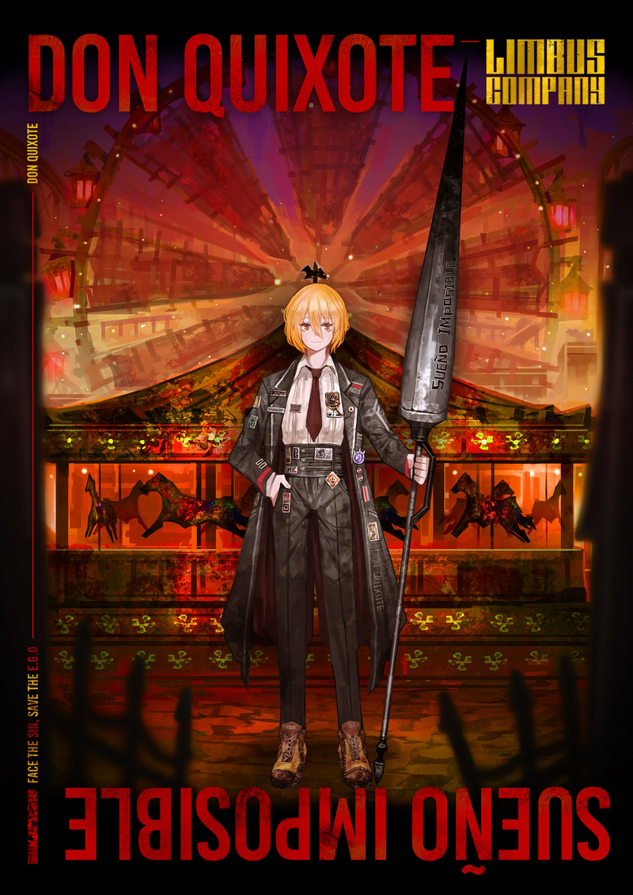
Don Quixote (Hangul: 돈키호테, don-ki-ho-te) is designated Sinner #3 of Limbus Company's LCB department. Don Quixote is a rambunctious and steadfast woman with a strong sense of justice. She never parts with her shoes Rocinante on her quest to become a valorous Fixer of the City, and was previously associated with the amusement park of La Manchaland prior to joining Limbus Company.
Sinner #4
 「かいなでの絵師には総じて醜いものの美しさなどと申すことは、
わかろうはずがございませぬ。」
「かいなでの絵師には総じて醜いものの美しさなどと申すことは、
わかろうはずがございませぬ。」
「Other lesser painters are such mediocrities,
they have no way to recognize the beauty that lies in ugliness.」
 Ryōshū (Hangul: 료슈, ryo-syu; Japanese: 良秀, りょうしゅう, ryōshū) is designated Sinner #4 of Limbus Company's LCB department. Ryōshū is an ungovernable woman with a fascination in art that she uniquely defines, with little tolerance for what disinterests or offends her. She was previously affiliated with a group known as the House of Spiders, consisting of high ranking officers of Fingers of the Backstreets, all with the goal of forging Ryōshū into a "blade".
Ryōshū (Hangul: 료슈, ryo-syu; Japanese: 良秀, りょうしゅう, ryōshū) is designated Sinner #4 of Limbus Company's LCB department. Ryōshū is an ungovernable woman with a fascination in art that she uniquely defines, with little tolerance for what disinterests or offends her. She was previously affiliated with a group known as the House of Spiders, consisting of high ranking officers of Fingers of the Backstreets, all with the goal of forging Ryōshū into a "blade".
Sinner #5
« Aujourd'hui, j'ai tué maman. Ou peut-être était-ce hier. »
"Today, I killed mother. Or maybe it was yesterday."
 Meursault (Hangul: 뫼르소, mwe-reu-so) is designated Sinner #5 of Limbus Company's LCB department. Meursault is a reserved and complacent man with a desire to be clearly communicated with. He was previously affiliated with N Corp., having tried and failed to form an opinion on their ideals prior to joining Limbus Company.
Meursault (Hangul: 뫼르소, mwe-reu-so) is designated Sinner #5 of Limbus Company's LCB department. Meursault is a reserved and complacent man with a desire to be clearly communicated with. He was previously affiliated with N Corp., having tried and failed to form an opinion on their ideals prior to joining Limbus Company.
Sinner #6
 「美中不足、 好事多魔。」
「美中不足、 好事多魔。」
「Jade has its flaws, and life its vicissitudes.」
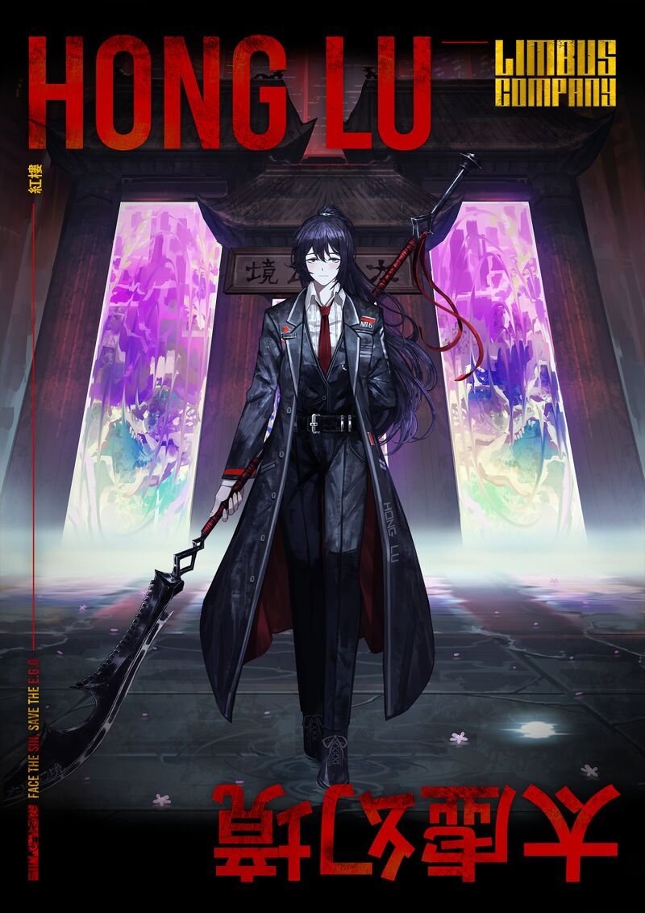
Hong Lu (Mandarin: 鴻璐; 鸿璐, Pinyin: Hóng lù; Hangul: 홍루, hong-ru), chosen name of Baoyu (Mandarin: 寶玉; 宝玉, Pinyin: Bǎoyù) of the Jia Family, is designated Sinner #6 of Limbus Company's LCB department. Hong Lu is a lighthearted and naive man with a tendency for unintentionally insensitive words. He is one of several children of the large and wealthy Jia family, having lived a life of sheltered affluence prior to joining Limbus Company.
Sinner #7
 "I have not broken your heart - YOU have; and in breaking it, you have broken mine."
"I have not broken your heart - YOU have; and in breaking it, you have broken mine."
 Heathcliff (Hangul: 히스클리프, hi-seu-keul-li-peu) is designated Sinner #7 of Limbus Company's LCB department. Heathcliff is a brash and action-oriented man with a strong, dedicated spirit. He was previously affiliated with Wuthering Heights, having grown up alongside the Earnshaws and later working for the Dead Rabbits Syndicate prior to joining Limbus Company.
Heathcliff (Hangul: 히스클리프, hi-seu-keul-li-peu) is designated Sinner #7 of Limbus Company's LCB department. Heathcliff is a brash and action-oriented man with a strong, dedicated spirit. He was previously affiliated with Wuthering Heights, having grown up alongside the Earnshaws and later working for the Dead Rabbits Syndicate prior to joining Limbus Company.
Sinner #8
"If you please, call me Ishmael."
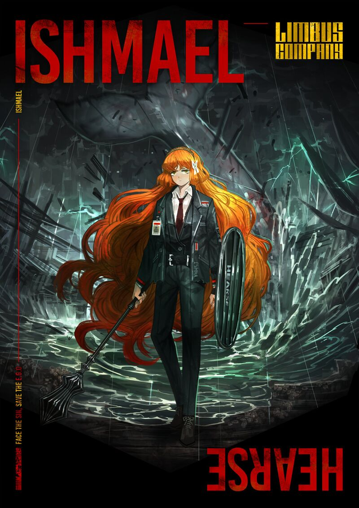
Ishmael (Hangul: 이스마엘, i-seu-ma-el) is designated Sinner #8 of Limbus Company's LCB department. Ishmael is a straight-laced and dependable woman with a tendency for blunt words. She was previously affiliated with the Pequod and its crew, and subsequently spent a number of years working as a Fixer prior to joining Limbus Company.
Sinner #9
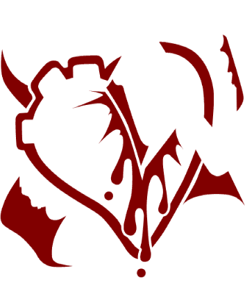"Если бы она могла совсем забыться и начать всё сызнова."
"If she could forget everything, and begin afresh."
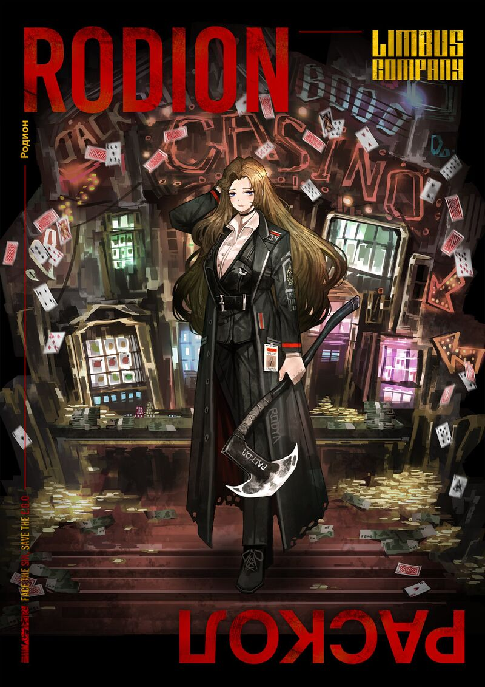
Rodion (Hangul: 로지온, ro-ji-on) is designated Sinner #9 of Limbus Company's LCB department. More frequently known as Rodya (Hangul: 로쟈, Rojya), she is a lively and nonchalant woman with a preference for informal conversation. She was previously affiliated with the Yurodiviye, having worked to overturn the injustices of the District 25 Backstreets prior to joining Limbus Company.
Sinner #11
 "Die böse Welt indessen begann schon mitten in unserem eigenen Hause."
"Die böse Welt indessen begann schon mitten in unserem eigenen Hause."
"Meanwhile, the world of evil began there already, right in the middle of our house."
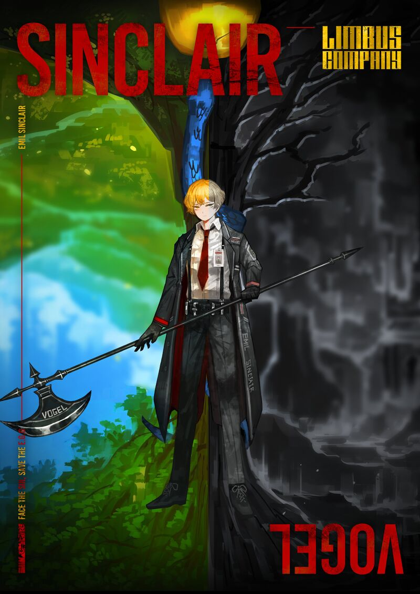
Emil Sinclair (Hangul: 에밀 싱클레어, e-mil sing-keul-le-eo) is designated Sinner #11 of Limbus Company's LCB department. More frequently known as just Sinclair, he is an anxious and self-conscious man with a blatantly empathetic nature. He was previously affiliated with the prosthetic-famous town of Calw, having lived and attended school there prior to joining Limbus Company.
Sinner #12
 “Είμαι... ου τις απολύτως.”
“Είμαι... ου τις απολύτως.”
"I am... nothing at all."
 Outis (Hangul: 오티스, o-ti-seu) is designated Sinner #12 of Limbus Company's LCB department. Outis is a brusque and assertive woman with a poorly-disguised inclination to look down on those around her. Previously affiliated with the Smoke War, she has a tendency to judge others based on her experiences there prior to joining Limbus Company.
Outis (Hangul: 오티스, o-ti-seu) is designated Sinner #12 of Limbus Company's LCB department. Outis is a brusque and assertive woman with a poorly-disguised inclination to look down on those around her. Previously affiliated with the Smoke War, she has a tendency to judge others based on her experiences there prior to joining Limbus Company.
Sinner #13
 "Als ich aus unruhigen Träumen erwachte, hatte ich mich in ein ungeheures Ungeziefer verwandelt."
"Als ich aus unruhigen Träumen erwachte, hatte ich mich in ein ungeheures Ungeziefer verwandelt."
"As I awoke from unsettling dreams, I had transformed into some hideous pest."
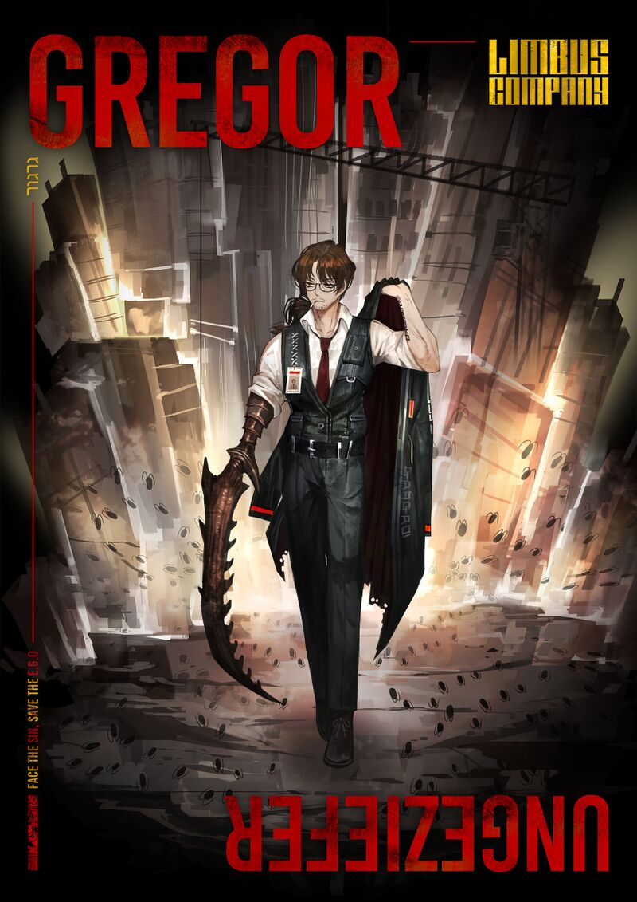
Gregor (Hangul: 그레고르, geu-re-go-reu) is designated Sinner #13 of Limbus Company's LCB department. Gregor is a good-humored and composed man with a bit of a competitive side. He was previously affiliated with the Smoke War, having fought for the Old G Corp. alongside other bug-augmented test subjects prior to joining Limbus Company.
Sinner #1
"Have you heard of the taxidermied genius?"
Yi Sang (Hangul: 이상, i-sang) is designated Sinner #1 of Limbus Company's LCB department. Yi Sang is a cryptic and mellow man with a lot of thoughtfulness to him. He was a researcher and architect previously affiliated with the League of Nine Littérateurs, having invented the Mirror as a T Corp. researcher prior to joining Limbus Company.
Sinner #2
»Es irrt der Mensch, solang er strebt.«
"Man errs, as long as he strives."
Faust (Hangul: 파우스트, pa-u-seu-teu) is designated Sinner #2 of Limbus Company's LCB department. Faust is an observant and intelligent woman with a slight know-it-all attitude. She was the first Sinner to be affiliated with Limbus Company, having spent the time leading up to it recruiting the members of the LCB and developing Mephistopheles.
Sinner #3
"To reach the unreachable star!"
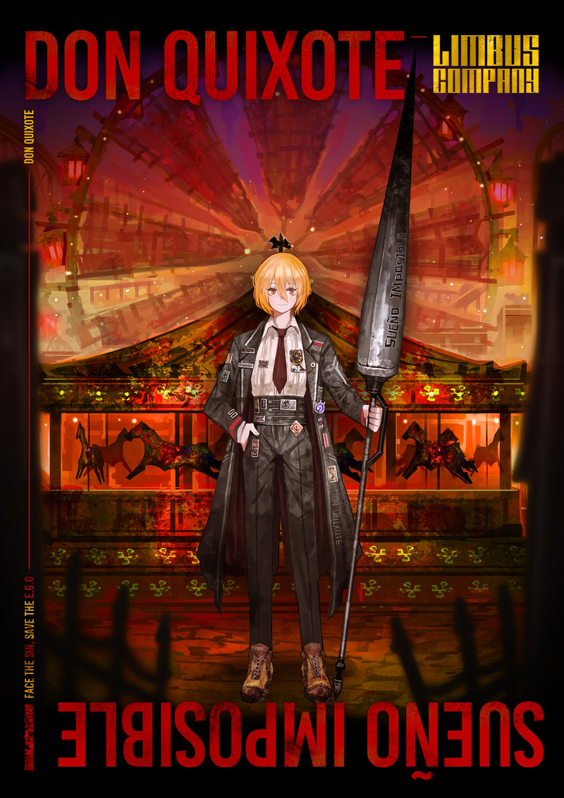 Don Quixote (Hangul: 돈키호테, don-ki-ho-te) is designated Sinner #3 of Limbus Company's LCB department. Don Quixote is a rambunctious and steadfast woman with a strong sense of justice. She never parts with her shoes Rocinante on her quest to become a valorous Fixer of the City, and was previously associated with the amusement park of La Manchaland prior to joining Limbus Company.
Sinner #4
「Other lesser painters are such mediocrities, they have no way to recognize the beauty that lies in ugliness.」
Ryōshū (Hangul: 료슈, ryo-syu; Japanese: 良秀, りょうしゅう, ryōshū) is designated Sinner #4 of Limbus Company's LCB department. Ryōshū is an ungovernable woman with a fascination in art that she uniquely defines, with little tolerance for what disinterests or offends her. She was previously affiliated with a group known as the House of Spiders, consisting of high ranking officers of Fingers of the Backstreets, all with the goal of forging Ryōshū into a "blade".
Sinner #5
« Aujourd'hui, j'ai tué maman. Ou peut-être était-ce hier. »
"Today, I killed mother. Or maybe it was yesterday."
Meursault (Hangul: 뫼르소, mwe-reu-so) is designated Sinner #5 of Limbus Company's LCB department. Meursault is a reserved and complacent man with a desire to be clearly communicated with. He was previously affiliated with N Corp., having tried and failed to form an opinion on their ideals prior to joining Limbus Company.
Sinner #6
「Jade has its flaws, and life its vicissitudes.」
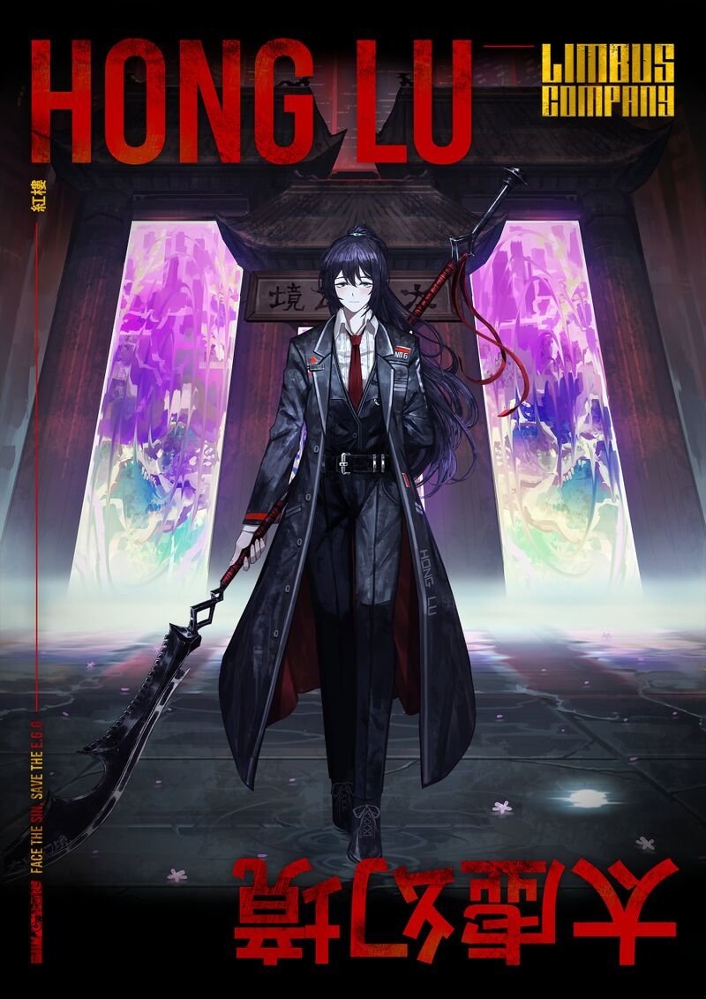 Hong Lu (Mandarin: 鴻璐; 鸿璐, Pinyin: Hóng lù; Hangul: 홍루, hong-ru), chosen name of Baoyu (Mandarin: 寶玉; 宝玉, Pinyin: Bǎoyù) of the Jia Family, is designated Sinner #6 of Limbus Company's LCB department. Hong Lu is a lighthearted and naive man with a tendency for unintentionally insensitive words. He is one of several children of the large and wealthy Jia family, having lived a life of sheltered affluence prior to joining Limbus Company.
Sinner #7
Heathcliff (Hangul: 히스클리프, hi-seu-keul-li-peu) is designated Sinner #7 of Limbus Company's LCB department. Heathcliff is a brash and action-oriented man with a strong, dedicated spirit. He was previously affiliated with Wuthering Heights, having grown up alongside the Earnshaws and later working for the Dead Rabbits Syndicate prior to joining Limbus Company.
Sinner #8
"If you please, call me Ishmael."
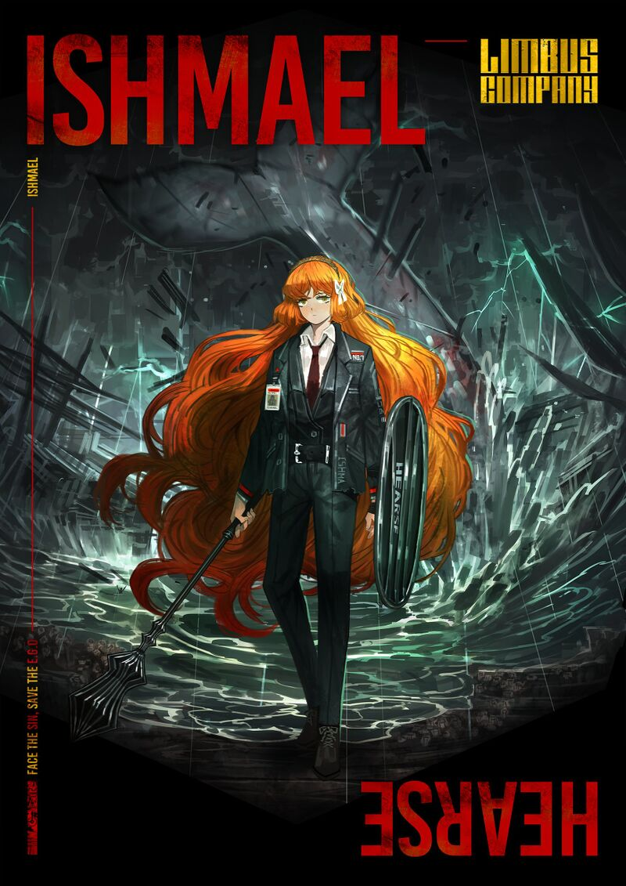 Ishmael (Hangul: 이스마엘, i-seu-ma-el) is designated Sinner #8 of Limbus Company's LCB department. Ishmael is a straight-laced and dependable woman with a tendency for blunt words. She was previously affiliated with the Pequod and its crew, and subsequently spent a number of years working as a Fixer prior to joining Limbus Company.
Sinner #9
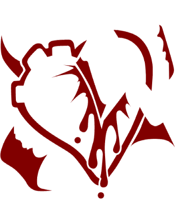"Если бы она могла совсем забыться и начать всё сызнова."
"If she could forget everything, and begin afresh."
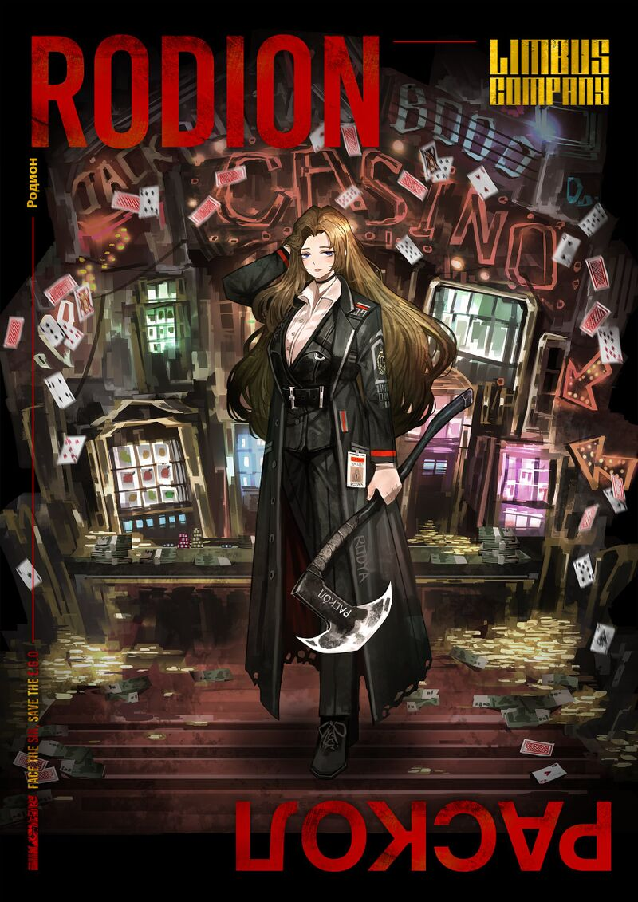 Rodion (Hangul: 로지온, ro-ji-on) is designated Sinner #9 of Limbus Company's LCB department. More frequently known as Rodya (Hangul: 로쟈, Rojya), she is a lively and nonchalant woman with a preference for informal conversation. She was previously affiliated with the Yurodiviye, having worked to overturn the injustices of the District 25 Backstreets prior to joining Limbus Company.
Sinner #11
"Meanwhile, the world of evil began there already, right in the middle of our house."
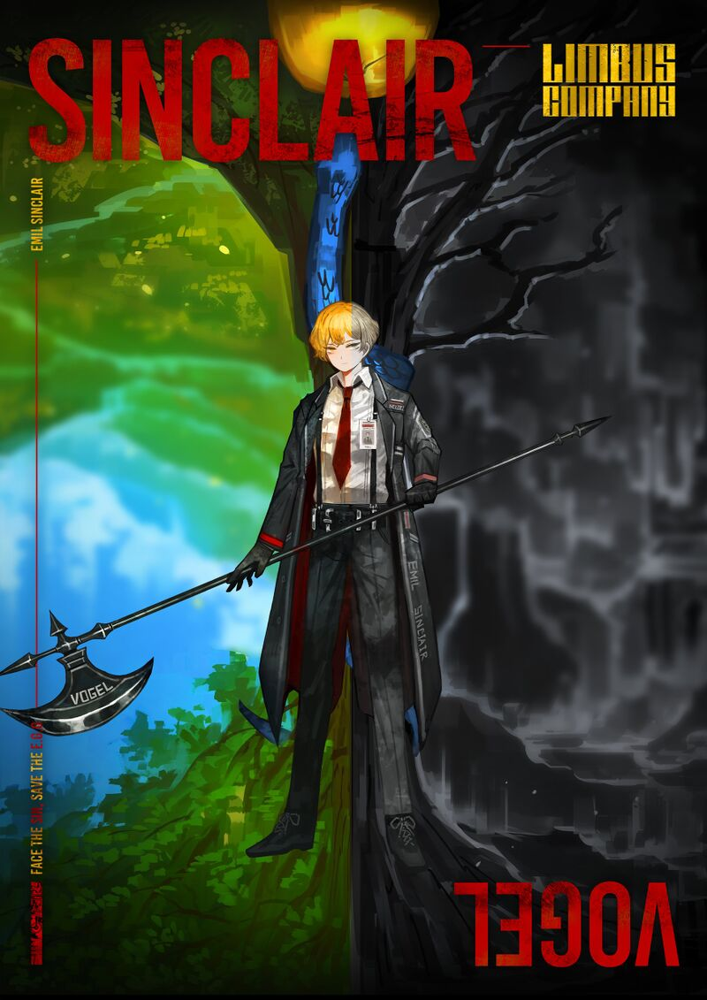 Emil Sinclair (Hangul: 에밀 싱클레어, e-mil sing-keul-le-eo) is designated Sinner #11 of Limbus Company's LCB department. More frequently known as just Sinclair, he is an anxious and self-conscious man with a blatantly empathetic nature. He was previously affiliated with the prosthetic-famous town of Calw, having lived and attended school there prior to joining Limbus Company.
Sinner #12
"I am... nothing at all."
Outis (Hangul: 오티스, o-ti-seu) is designated Sinner #12 of Limbus Company's LCB department. Outis is a brusque and assertive woman with a poorly-disguised inclination to look down on those around her. Previously affiliated with the Smoke War, she has a tendency to judge others based on her experiences there prior to joining Limbus Company.
Sinner #13
"As I awoke from unsettling dreams, I had transformed into some hideous pest."
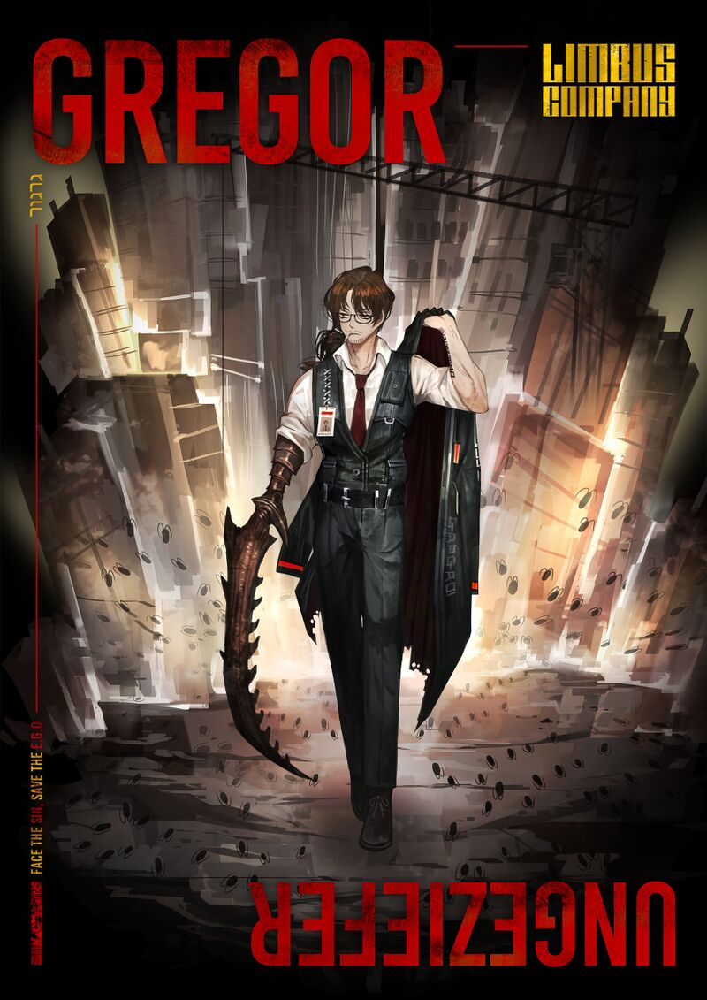 Gregor (Hangul: 그레고르, geu-re-go-reu) is designated Sinner #13 of Limbus Company's LCB department. Gregor is a good-humored and composed man with a bit of a competitive side. He was previously affiliated with the Smoke War, having fought for the Old G Corp. alongside other bug-augmented test subjects prior to joining Limbus Company.
Information
The character tier list also works, as in, you can move the elements around, although there is no save or export function.
Site made by S.P.